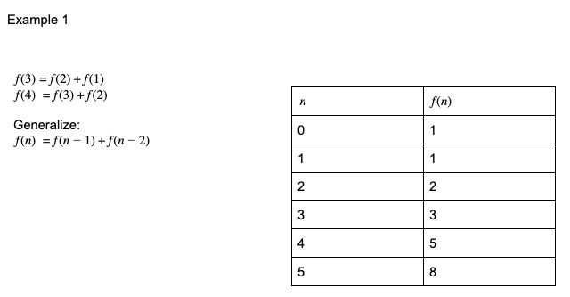
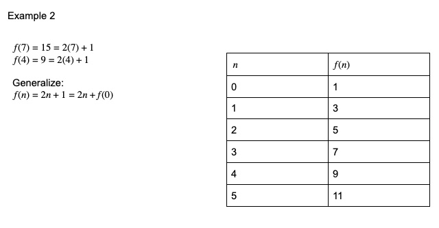
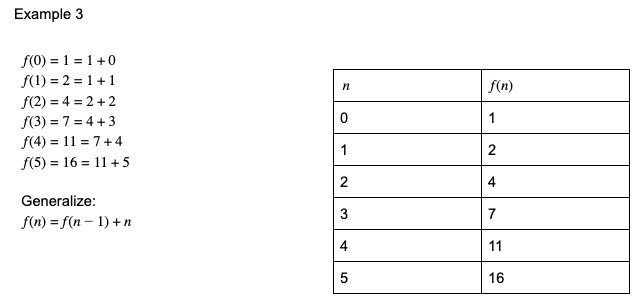
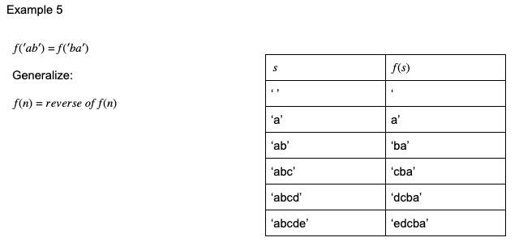
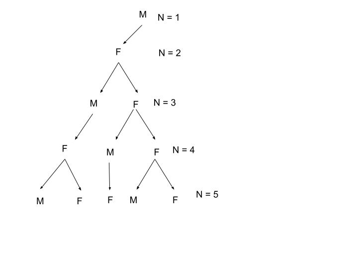
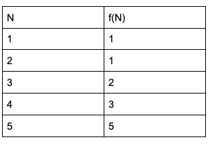
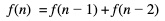

You will not be expected to code your own recursive functions, but you will be expected to completed written recursive functions. For example,




Example 6
Depending on whether its egg is fertilized or not, a bee is born female (fertilized egg) or male (unfertilized egg). This means:
• every male bee has a mother, but not a father
• every female bee has a mother and a father
Write a recursive function with an integer parameter N that returns the number of ancestors a male bee has at its Nth generation of ancestors.
Solution:


We've seen this pattern before! It is a Fibonacci Sequence! It is a number created by adding the previous two numbers in the sequence: 0, 1, 1, 2, 3, 5, 8, 13, 21, 34, 55, ...
